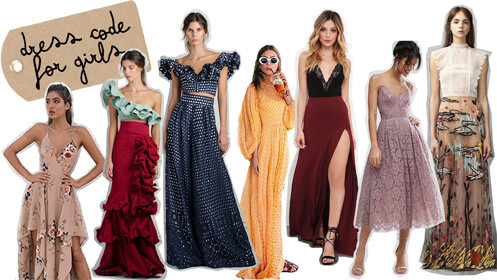
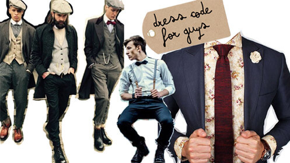

- ¿Cómo puedo vestir? -
No hay mucho que saber acerca del Dress Code de #marinares, el tema de la boda es “Hipster-bohemio-chic con toques mágicos”, sírvase de interpretarlo a su conveniencia, sólo recuerden que es formal, que es al aire libre, pero no hace frío ya que será en plena primavera. Ideal para texturas, bordados y flores en mujeres. No se permite el blanco, el negro total, ni color vino (es el color del novio).
El negro se puede combinar, las texturas como: cuadritos, bordados y estampados en los trajes en hombres y en los vestidos en mujeres… ¡Son bienvenidos! También nos gustan las pajaritas, accesorios, fistoles y uno que otro sombrero no estaría mal. Lo importante es que nada te impida bailar y pasarla bien.
Gama sugerida de colores

-Recomendaciones Mujeres
-Recomendaciones Hombres
